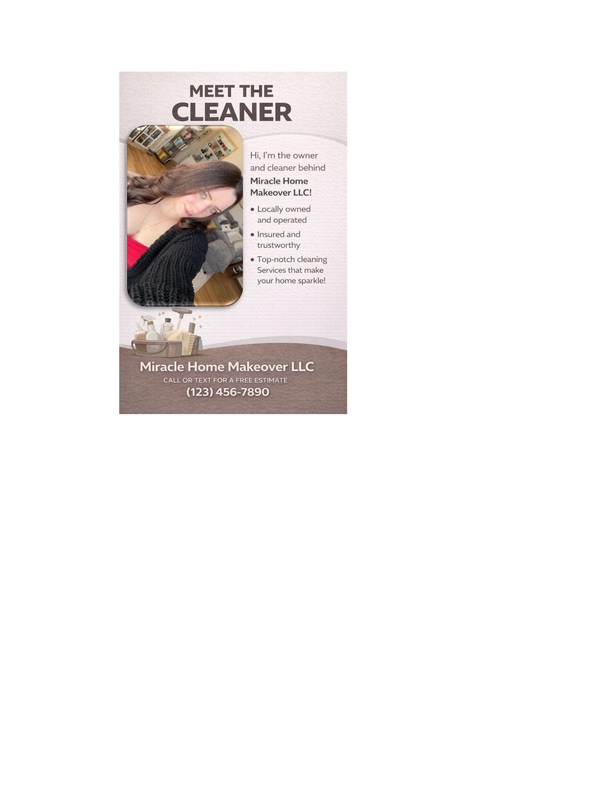

The Heart Behind Miracle Home Makeover LLC

I am the proud owner of Miracle Home Makeover LLC.
I was a straight-A student all throughout school. I’ve always been dedicated, detail-oriented, and driven to do my best in everything I take on.
I love to read, craft, and spend time on the water, whether that’s swimming or relaxing by the river. It’s where I recharge and find peace.
I was definitely a little sassy growing up—and honestly, that spark helped shape me into the strong, independent woman I am today. I’m one of five children, raised in a loving and hardworking family that truly shaped who I am. My father gave me the drive, determination, and strong work ethic that pushed me to build something of my own. My mother taught me the value of a clean, organized, and beautifully maintained home. These are all skills that became the foundation of my business.
Recently, my boyfriend and I renovated an entire home from the ground up. From post-construction cleaning to painting, decorating, organizing, and personalizing every detail for our little family. I’ve experienced firsthand just how important a clean, structured, and comfortable space truly is.
That experience deepened my passion even more. I don’t just clean homes, I help create environments where people can relax, feel proud, and truly enjoy their space. Every home deserves a miracle.
When I come into your home, I treat it with the same care, respect, and attention to detail as I would my own. Your comfort and satisfaction mean everything to me.
From the bottom of my heart, thank you for supporting my journey and trusting me with your home. It truly means more than words can express.